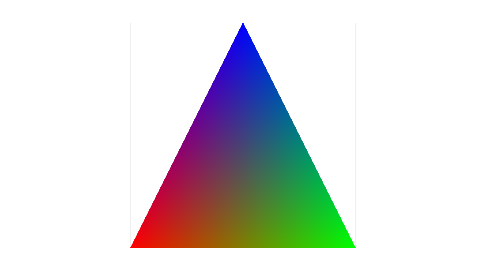

In this homework, I wrote the core functions used in rasterization. It is able to draw triangles and interpolate inside the triangles.
Task 1: Drawing Single-Color Triangles
To rasterize a triangle:
The bounding box for the triangle is found by taking the min and max of every point.
Each pixel within the bounding box is sampled with the three line equations for the triangle. If the point is inside all three lines or outside all three lines, the pixel is filled in the framebuffer.
In order to avoid extra calculation, the only pixels iterated upon are the pixels in the bounding box. This is done by changing the for loops to start at the bounding box start and end at the bounding box end.
The loop order was also changed to iterate y then x. Assuming the framebuffer is layed out in row major order, this should improve the cache hit rate.
basic/test4.svg
Task 2: Antialiasing by Supersampling
In order to do supersampling, the size of the framebuffer was increased by the supersampling factor.
For traingles, the triangle coordinates were multiplied by sqrt(sample_rate). Then the triangles were drawn as if the screen was the higher resolution.
Then resolve_to_framebuffer was modified to take the average for each supersample tile and use that for the final pixel color.
Supersampling is useful for reducing aliasing. In this case, it is used to reduce stair-stepping of hard edges on a pixel grid.
The difference between sample rates can be seen below. With no supersampling, gaps can be observed. Then, when the sample rate is increased, the triangle hits some of the subsamples and causes a value between white and red. This creates a smooth appearance from afar.
1x
4x
9x
16x
Task 3: Transforms
The original robot only had 0 or 45 degree angles. This would not test whether I did the correct rotation matrix. I changed the robot head to have a different tilt, and added eyes to check draw order.
I also rotated and translated the right arm to have a more interesting pose.
Robot with eyes waving.
Task 4: Barycentric coordinates
Barycentric coordinates are a good way to interpolate between the points on a triangle. The way they interpolate fits expectation. If you interpolate the position of the triangle's points, you will get the position of each point as it lies on the triangle.
When color data is interpolated, you get a smooth blending of the colors (as seen below).

Triangle interpolating between red blue and green
basic/test7.svg
Task 5: "Pixel sampling" for texture mapping
Pixel sampling is the method used for fetching texels that are mapped onto a rendered surface.
The two studied here are nearest and bilinear.
Nearest just gets the nearest texel to the UV coordinate. This has a "pixelated" look.
Bilinear gets the nearest 4 texels and linearly interpolates between them depending on UV coordinate. This has a smoother look.
In the below pictures, the interpolation methods are compared at different levels of supersampling.
There tends to be a large difference between sampling methods when the frequency of the image data is higher than the sampling will capture. This is because bilinear interpolation will capture more pixels, and is less likely to skip some. Pre-filtering the texture is better for fixing this issue.
(Not as visible here) There also tends to be a large difference when the resolution of the texture is low. Then bilinear will have the effect of smoothing out hard edges between texels.
1x nearest
16x nearest
1x bilinear
16x bilinear
Task 6: "Level Sampling" with mipmaps for texture mapping
Level sampling is pre-filtering the texture to reduce aliasing when it is down-sampled. The image is usually stored in successively lower resolutions which saves memory and has the effect of low-pass filtering the image.
The pre-provided code generated the mips ahead of time, but my code used them based on the largest magnatude of the change in u or v across one pixel.
If the next pixel in a direction moved a lot in the u or v coordinate, then the texture lookup is likely to skip pixels, and a lower level is sampled.
Increasing the number of samples per pixel is very expensive, but takes the least memory, and tends to have accurate results. It becomes very expensive, however, when you need to down-sample a texture by a large factor.
Changing the sampling to bilinear instead of nearest takes 4 times as many texture lookups as it otherwise would. It is better for reducing jaggies than reducing sample aliasing.
Using level sampling takes more memory to store the levels. Using linear interpolation to interpolate between levels also doubles the number of texture lookups. While this solves the issue of aliasing, it tends to blur the final texture.
This is partially because the texture may only need to be blurred in one axis.
In the below images, you can see that the level sampling clearly blurs the numbers towards the edges. It makes the numbers closest to the edges un-readable. However, it does make the whole image look much smoother.